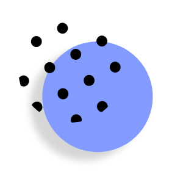
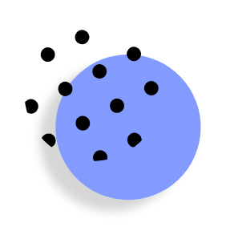
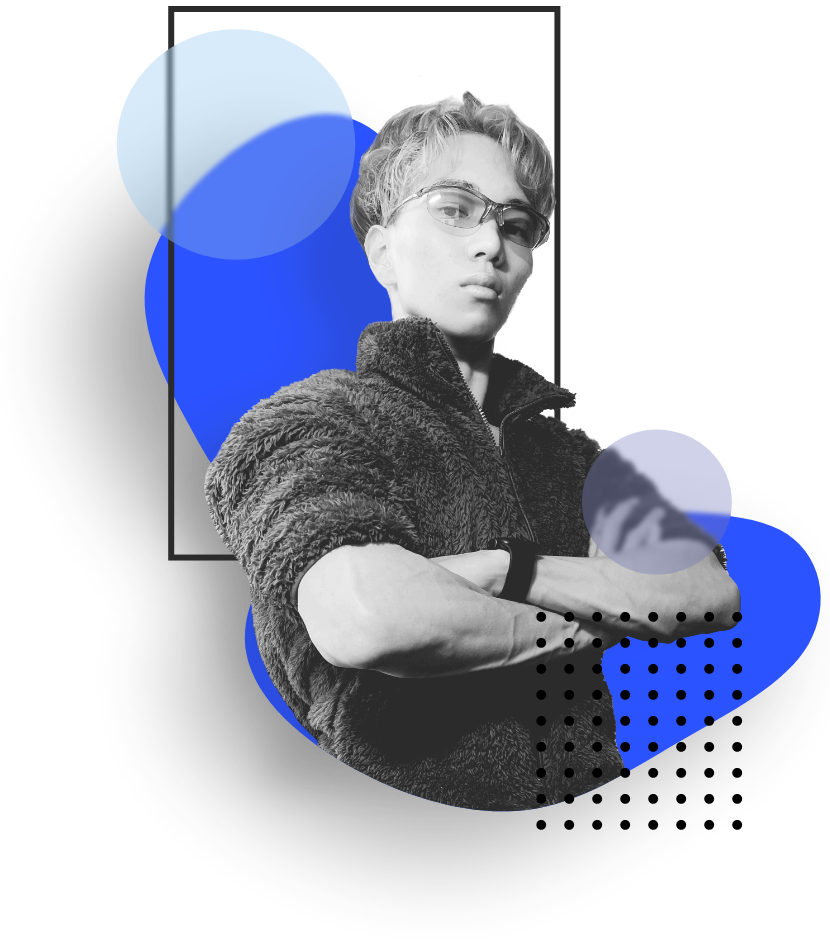
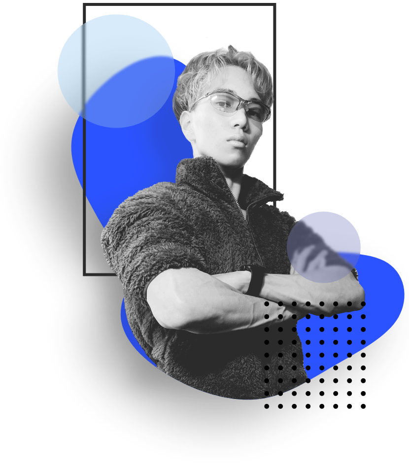

 


 

体系的なコーディング
HTMLとCSSのコーディングに自信があります。 正確な挙動と可読性に重きを置いており、修正や汎用がしやすいコードを心がけています。 また、大学でプログラミングを学んでいることもあり「なんだかわからないけど動いている」ようなコードは書きません。
また昨今ではNoCodeでもHP制作ができ、そのスキルのみで戦うフリーランスの方が増えています。しかしそれのみでは、全ての細かな調整や変更はできません。例外に対処できないような中途半端な技術ではなく、きちんと論理的に構築できる技術を持っていますので、その点は安心してお任せください。